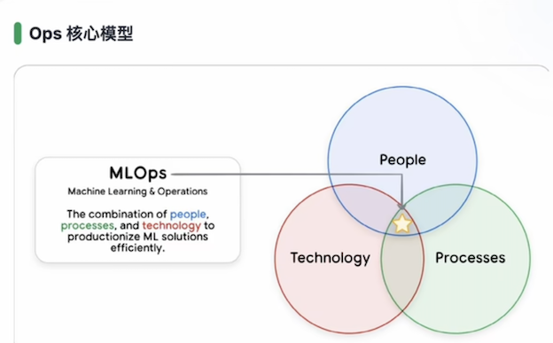
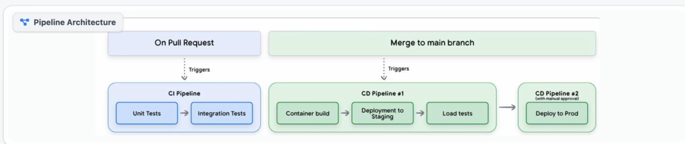
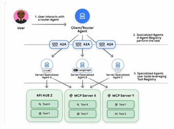

6google agent
Day 05：Agent从原型到生产环境的“最后一公里”实战
在AI Agent的研发周期中，“做出Demo”往往只完成了20%的工作——剩余80%的精力，都耗费在从“原型”到“生产环境”的落地过程中。Google与Kaggle联合推出的5日课程最后一期，聚焦AgentOps（智能体运维），拆解了企业级Agent落地的核心挑战、运维困局与工业化解决方案。
一、破局“最后一公里”：80%的工作不在“智能”，而在“可信交付”
企业级Agent落地的核心矛盾在于：Demo阶段只需要“智能”，但生产环境需要“可信”。Google的数据显示，80%的AI项目折戟于上线前，根源是“智能”之外的四大风险：
| 生产环境风险 | 核心表现 | 风险类型 |
|---|---|---|
| 越权风险 | Guardrails防护失效，Agent被恶意套话导致资产损失 | 安全风险 |
| 数据泄露 | 身份验证配置错误，Agent成为内网敏感数据的泄露通道 | 隐私风险 |
| 账单失控 | 缺乏Token级监控，资源被无限制滥用导致成本超支 | 成本风险 |
| 质量回退 | 缺乏持续评估，Agent性能突然下降却无法定位原因 | 质量风险 |
Agent运维的非确定性困局：从Demo到生产的“三座大山”
Agent的动态特性，让传统软件的运维方法完全失效，其核心困局可概括为“三座大山”：
- 动态编排黑盒
Agent的执行路径是动态生成的——每次调用的工具链可能完全不同，导致版本控制失效、Bug极难复现。传统“固定流程”的运维逻辑，无法适配Agent的“灵活决策”。
- 记忆一致性挑战
多轮对话的记忆不是简单的KV存储，在分布式架构下，保持记忆上下文的实时一致性与持久化，是巨大的系统工程。某电商Agent曾因记忆同步延迟，向用户重复推荐已购买的商品。
- SLA难以量化
Agent的思考路径不确定，导致Token消耗、延迟等指标波动极大——今天思考3步，明天可能思考10步，成本与延迟完全不可控，传统SLA（服务等级协议）的量化标准失效。
AgentOps三大支柱：构建工业化运维体系
要解决Agent的生产落地问题，需要建立AgentOps（智能体运维）体系，其核心是三大支柱：
| 支柱 | 核心能力 | 价值 |
|---|---|---|
| 自动化评估 | 建立严格的测试基准，通过LLM-as-Judge等方式自动验证Agent行为 | 质量门禁：确保每一次回复都符合预期 |
| 自动化部署（CI/CD） | 打通Notebook到生产环境的流程，支持快速试错、无痛上线 | 迭代引擎：连接开发与生产的“高速公路” |
| 全链路可观测 | 追踪Token流动、透视LLM的决策路径，避免“黑盒盲猜” | 感官系统：理解Agent的思考过程 |

People & Process：重构人、流程与技术的铁三角
AgentOps的本质不是“纯技术问题”，而是人、流程、技术的协同。Google强调：“技术无法解决组织架构带来的管理真空”，三者的核心分工是：
- People（人）：定义Guardrails、审核评估报告，明确团队角色与责任边界；
- Process（流程）：建立标准化流水线与协作机制，避免因流程缺失导致执行混乱；
- Technology（技术）：CI/CD、自动化脚本等是底座，但不能替代人的决策与流程的规范。
团队架构进化：从传统MLOps到GenAI时代的角色重塑
传统MLOps团队（Cloud Platform、Data Engineering、DS & MLOps、ML Governance）已无法适配Agent的复杂需求，GenAI时代的团队角色需要重塑：
| 新角色 | 核心职责 |
|---|---|
| Prompt工程师 | 不仅写提示词，更要结合领域知识定义评估标准（Eval） |
| AI工程师 | 系统构建者，负责RAG集成、工具链编排、Guardrails安全护栏 |
| DevOps/开发工程师 | 聚焦前端交互与用户界面集成，打通“最后一公里” |
在初创团队中，“一人多职”是常态，全栈AI工程师正成为核心角色——他们需要同时掌握Prompt设计、系统开发、运维监控等能力。
二、从落地工具到质量门禁，企业级Agent的生产级方案
Google Cloud Agent Starter Pack：开箱即用的企业级工具箱
Agent落地的最大成本，往往是“配置基建”而非业务逻辑。Google Cloud的Starter Pack提供了开箱即用的生产级工具链，核心组件包括：
| 组件类型 | 核心能力 | 价值 |
|---|---|---|
| 生产级Python模板 | 标准化项目结构，内置最佳实践 | 无需从头搭建脚手架，直接复用成熟框架 |
| 自动化CI/CD配置 | 预置Cloud Build脚本，代码提交自动构建测试 | 加速迭代，减少人工操作 |
| 基础设施即代码（IaC） | 内置Terraform模组，一键拉起云资源 | 确保环境一致性100%，避免“本地能跑、线上崩溃” |
| 内置评估与可观测性 | 集成Vertex AI Evaluation | 让Agent的效果可量化、可追踪，解决“黑盒问题” |
为什么Agent需要“质量门禁”？传统测试的失效与新评估逻辑
Agent的“概率性行为”，让传统软件的“输入A→输出B”测试逻辑完全失效——一个Agent可能结果正确，但过程存在逻辑跳跃、工具调用错误，甚至隐藏风险操作。
传统测试与Agent评估的核心差异：
| 维度 | 传统软件测试 | AI Agent评估 |
|---|---|---|
| 核心目标 | 功能正确性 | 行为质量 |
| 路径特性 | 确定性路径 | 概率性发散 |
| 评估维度 | 仅验证逻辑跑通 | 多维度（逻辑/语气/安全性） |
| 风险点 | 功能失效 | 过程“绕弯路”、行为失控 |
评估核心：从“结果黑盒”到“轨迹透明”
Agent的质量评估不能只看“最终答案”，必须深入思考轨迹（Trajectory）——这是避免生产环境灾难的关键。轨迹评估的四个核心维度：
| 评估维度 | 核心问题 | 风险防控点 |
|---|---|---|
| Reasoning Trace（推理链） | 逻辑是否连贯？ | 避免中间步骤的逻辑跳跃与幻觉 |
| Tool Selection（工具选择） | 调用是否精准？ | 确保函数参数与上下文匹配 |
| Action Path（行动路径） | 是否存在无效步骤？ | 检测冗余循环与高危操作 |
| Final Answer（最终答案） | 结果是否正确？ | 传统Output校验，仅为最后一步 |
专家视角：生产环境中，Agent通过100个单元测试不重要，行动路径出现一次不可控，就是灾难。
质量门禁方案：从人工到自动化的落地选择
质量门禁是Agent生产级部署的“安全阀”，Google提供了两种适配不同团队阶段的方案：
方案一：人工Pre-PR门禁（适配早期团队）
成本低、快速实施，核心流程： 1. 本地执行：在本地运行评估套件，确保Agent基础能力达标； 2. 生成报告：产出性能对比报告，与生产环境基线做差异分析； 3. 提交PR：代码合并请求必须附带评估报告； 4. 人工评审：Reviewer同时检查代码质量与Agent行为数据是否退步。
方案二：自动化流水线门禁（适配成熟团队）
集成到CI/CD流程，用程序替代人工审核的不确定性，核心逻辑：
- 代码提交自动触发评估；
- 设置质量阈值（如工具调用成功率>99%、有用性评分>4.5/5）；
- 未达阈值则拦截部署，确保“不达标不上线”。
Golden Dataset：评估体系的“真理标准”
黄金数据集是质量门禁的核心资产，它不是普通题库，而是人工校准、高度代表性的测试用例集，承担三大角色：
- 核心意图覆盖：覆盖80%的常见场景（“必考题”），确保Happy Path功能正常；
- 安全边界校验：包含诱导攻击、敏感话题拦截等“送命题”，严守安全底线；
- 回归测试基准：在版本迭代中对比新旧版本表现，确保能力“不退反进”。
CI/CD自动化流水线：三阶段漏斗模型，实现Shift Left
Agent的CI/CD流水线遵循Shift Left（左移）原则，将问题拦截在早期阶段，核心分为三阶段：
- Pre-Merge（代码合并前）：CI前置拦截，通过单元测试、集成测试过滤低级错误；
- Staging（预发布环境）：CD仿真实体，在类生产环境做深度集成测试，模拟真实流量；
- Production（生产环境）：人工确认后的灰度发布+全量上线，作为最后一道防线。

Pre-Merge CI：速度与质量左移，绝不污染主干分支
Pre-Merge CI的核心目标是在代码合并前拦截所有问题，确保主干分支的“纯净性”。其流程包含三个关键环节：
| 环节 | 核心能力 | 价值 |
|---|---|---|
| 基础代码规范 | Unit Tests + Linting | 快速过滤语法、逻辑低级错误 |
| 依赖安全性扫描 | Dependency Scanning | 避免引入含漏洞的第三方依赖 |
| 轻量级Agent评估 | 核心子集（Small Subset）测试 | 聚焦核心功能逻辑，兼顾评估效率与质量 |
核心特征：自动化触发+极速反馈，通过pr_checks.yaml配置，实现“代码提交即验证”。
Staging CD：仿真战场，验证系统级真实运行状态
Staging是生产环境的“高保真副本”，核心目标是验证系统级的真实表现，避免“环境差异”导致的上线故障。其流程包含四步：
- 部署至Staging：建立与生产环境1:1的副本，杜绝环境玄学；
- 集成测试：调用真实远程服务，验证组件交互逻辑；
- 压力测试：模拟高并发场景，提前暴露性能瓶颈；
- 内部试用（Dogfooding）：让团队成员在真实场景中发现“机器测不出的体验问题”。
Production发布：人工把关，最小化风险的三大防线
生产环境发布拒绝“全自动化”，必须通过三层防线将风险降到最低：
| 防线 | 核心机制 | 风险防控点 |
|---|---|---|
| 人工核准（Sign-off） | 由PO（产品负责人）最终确认 | 明确责任归属，避免“无人担责” |
| 制品直接晋级 | 复用Staging验证过的制品包，严禁重新构建 | 确保“测什么、发什么”，消除环境差异风险 |
| 安全灰度发布 | Canary（金丝雀）/蓝绿部署，逐步引入流量 | 出现问题可快速回滚，避免全量故障 |
评估体系的两大基石：环境一致与自动化测试
Agent的全流程评估，依赖两大基建支撑：
- 基础设施即代码（IaC）：通过Terraform模组，确保Dev/Staging/Production环境100%同步，消除“环境玄学”；
- 自动化测试框架（Pytest）：不仅是测试工具，更是评估“驱动器”——负责多轮对话推进、Trace管理与Log记录，让Agent的行为可复现、可分析。
安全红线：Secrets Management，拒绝密钥“裸奔”
Agent开发中，密钥泄露是最致命的安全风险之一。Google的安全规范明确：
- 死亡禁区（DON'T）：禁止硬编码API密钥、禁止将敏感信息提交到Git仓库；
- 最佳实践（DO）：通过Secret Manager云端加密存储密钥，运行时注入内存（仅在Agent启动时通过IAM权限拉取），确保“密钥不落地”。
三、 Agent生产运维：从可观测到自主优化的全链路体系
AI Agent上线后，“运维”才是长期稳定运行的核心——Google Cloud通过“观测-干预-进化”的闭环体系，将Agent从“被动服务”升级为“自治系统”，同时解决自主性带来的不确定性、成本失控等问题。
Agent范式转移：从“确定性服务”到“自主系统”的挑战
Agent的“自主性”带来了传统服务没有的三大痛点，导致传统监控逻辑彻底失效：
| 痛点 | 核心表现 | 风险 |
|---|---|---|
| 自主决策体 | 路径非线性、决策逻辑动态生成，不再遵循“输入A→输出B” | 行为不可预测 |
| 涌现性行为 | 多轮交互中产生未预期的“模型发疯”，超出开发者边界 | 输出失控 |
| 隐形算力堆积 | 自主推理“绕弯路”，后台悄悄消耗巨额Token | 成本失控 |
可观测性体系：告别盲盒，构建透明化推理链路
Agent的可观测性需覆盖“事实-因果-指标”三层，核心是还原推理链条：
| 可观测支柱 | 核心作用 | Agent场景价值 |
|---|---|---|
| Logs（事实记录） | 记录离散事件 | 捕捉工具调用的原始输入输出、报错堆栈 |
| Traces（因果路径） | 串联全生命周期链路 | 还原推理链（CoT），解释工具选择、死循环原因 |
| Metrics（聚合指标） | 时间序列数值统计 | 监控Cost（Token消耗）、Latency（推理耗时）、Quality（任务成功率） |
Google Cloud全链路可观测实践
通过Request ID上下文透传，串联三大工具实现深度透视：
- Cloud Trace：调用链可视化，生成分布式火焰图，追踪从Agent到Tool的每一跳延迟；
- Cloud Logging：结构化日志中枢，毫秒级定位模型幻觉、工具调用失败的上下文；
- Cloud Monitoring：实时看板+告警，延迟超标/错误率激增时触发Slack/PagerDuty通知。
配合ADK自动化插桩技术，实现“开箱即用、零代码侵入、全链路透视”——无需手动埋点，自动捕获从Prompt到Response的所有推理细节。
实时干预机制：从“被动看图”到“主动控制”
Agent运维的核心是“主动控制”，而非仅看Dashboard：
- 传统误区：只观测不干预，数据再漂亮也无法解决实时问题；
- AgentOps正解：设置“干预预制”与“安全熔断”拉杆——当系统跑偏时，可实时介入、切断风险操作。
系统健康的不可能三角：性能、成本、规模的博弈
Agent系统无法同时满足“高性能、低成本、大规模”，需基于优先级取舍：
- 性能：低延迟、高响应；
- 成本：控制Token消耗、算力支出；
- 规模：高吞吐、高并发。
Google的架构策略是“无状态+异步驱动”，实现弹性扩展：
- 水平扩展：逻辑层容器化、无状态化，拒绝本地状态存储，支持随时弹性伸缩；
- 异步处理：事件驱动架构，通过Pub/Sub消息队列触发Cloud Run无服务器计算，耗时任务后台异步执行，保证前端轻量。
状态管理：从Stateless到记忆外置
LLM本身是无状态的，若状态存在本地内存，扩容/重启会丢失上下文。解决方案是Memory Externalization（记忆外置）：
构建独立于计算层的外部存储架构，实现Session持久化与跨节点同步。Google提供两种路径：
- Managed Path（Vertex AI Agent Engine）：内置Session管理，零运维成本，适合快速迭代；
- Custom Path（Cloud Run + AlloyDB/SQL）：手动对接数据库，灵活可控，适合复杂状态机。
性能优化三板斧：降本提效的核心策略
通过三大手段平衡性能与成本：
- 并行化调用：能同时调多个工具就不串行，利用异步并发压缩I/O等待时间；
- 激进缓存：语义缓存匹配相似问题，避免重复调用LLM，实现Zero Latency；
- 模型分级：简单任务（分类/提取）用小模型，复杂任务用大模型，“好钢用在刀刃上”。
AI Agent的生产落地，不仅要“能用”，更要“可靠、省钱、安全”。Google Cloud通过可靠性架构、成本控制、安全防线与进化闭环，构建了Agent从稳定运行到持续优化的完整体系。
可靠性架构：重试策略与幂等性的生死线
Agent调用外部服务时，失败重试是常态，但“盲目重试”会引发生产事故——核心是指数退避+幂等性保障：
1. 指数退避（Exponential Backoff）
通过“失败后等待时间指数增长”的策略（如T=0s失败→等1s，T=1s失败→等2s），避免瞬间流量击穿下游服务，最终实现成功调用。
2. 幂等性（Idempotency）
这是重试的“前提条件”——确保“调用多少次，结果都一致”：
- 安全重试场景：读操作/查询（重复调用无副作用）；
- 危险场景：非幂等操作（如支付），重复重试会导致“重复扣费”，这是生产事故的根源。
成本控制：拒绝Token浪费的三大抓手
Agent的成本核心是Token消耗，Google的降本策略聚焦“精准、分级、批量”：
| 策略 | 核心逻辑 | 价值 |
|---|---|---|
| 提示词工程 | 精简上下文，去除冗余话术，精准描述意图 | 减少不必要的Token消耗 |
| 模型分级路由 | 简单任务（分类/提取）用小模型，复杂任务用大模型 | “杀鸡不用牛刀”，降低调用成本 |
| 异步批处理 | 非实时任务攒一批请求再调用LLM | 提高吞吐量，降低单位调用成本 |
安全防线：从Prompt到记忆的全链路防护
Agent的安全风险是“专属且隐蔽”的，核心风险包括：
- Prompt注入：用户诱导Agent绕过安全限制，执行未授权操作；
- 数据泄露：Agent意外暴露训练数据、隐私或系统Prompt；
- 记忆污染：恶意交互向Agent灌输错误知识，污染RAG/长期记忆。
Google构建了三道安全防线：
第一道：Agent宪法（行为准则）
通过system_prompt定义Agent的“绝对不能做”的边界（如“No PII泄露”“中立立场”），像“阿西莫夫三定律”一样，作为所有交互的安全底座。
第二道：安全围栏（强制执行层）
- 输入过滤：Prompt进入模型前，用Perspective API拦截恶意注入；
- 输出熔断：生成内容返回前，用Vertex AI Safety Filters阻断有害内容；
- 人机回环：高风险操作自动转入人工审核流程。
第三道：持续性审计
安全不是“一次性交付”，而是持续对抗：
- 严苛回归评估：任何代码/模型变更，都触发全量安全回归测试；
- RAI专项测试：验证中立性、公平性，消除算法偏见；
- 主动红队演练：内部模拟对抗性攻击，提前挖掘逻辑漏洞。
应急响应Playbook：从熔断到修复的闭环
当安全/故障发生时，核心是“快速止血、有序处理、根治问题”：
- 遏制（Contain）：用Circuit Breaker/Feature Flag切断问题工具的调用链路，停止损失；
- 分流（Triage）：将流量切至人机回环队列，人工审查清洗，不直接丢弃请求；
- 解决（Resolve）：修复Prompt/代码逻辑，必须通过完整CI/CD流程发布，严禁生产环境热修复。
进化闭环：将失败转化为资产
Agent的优化不是“修复Bug”，而是“把失败变成数据资产”：
- Insight to Action：分析生产日志，执行根因分析（RCA），定位模型能力边界；
- Dataset Augmentation：将生产环境的Bad Case自动清洗，注入测试集，把“偶发故障”变成“必测考题”；
- Virtuous Cycle（良性循环）：持续扩充Golden Dataset，构建“数据飞轮”，驱动模型每一次跌倒后定向进化。
4 Agent进阶架构：打破孤岛，构建A2A×MCP×Registry互联体系
当企业内Agent数量从“个位数”增长到“数十个”，孤岛效应会成为规模化的最大障碍——不同Agent各自为战，导致能力冗余、数据割裂、协作成本飙升。Google的进阶架构通过A2A（Agent协作协议）、MCP（模型上下文协议）、Registry（注册中心），实现Agent从“单兵作战”到“军团化编排”的升级。
孤岛效应：规模化的隐形高墙
企业规模化部署Agent时，会陷入三大痛点：
- 能力冗余：不同团队重复开发相同功能（如预测模型），研发资源严重浪费；
- 洞察割裂：数据无法跨Agent流通（如客服数据喂不进预测模型），Agent“智能不足”；
- 协作成本高：打通两个Agent需人工硬编码集成，维护成本随数量指数上升。
Agent互操作性协议：双层架构定义通用语言
要打破孤岛，需建立Agent间的“通用语言”——Google提出双层协议架构：
| 协议层级 | 核心定位 | 解决痛点 | 类比 |
|---|---|---|---|
| MCP（Model Context Protocol，底层） | 模型上下文协议 | 标准化工具/API的结构化输入输出，解决“集成难” | Agent的“双手”（连接资源） |
| A2A（Agent2Agent，上层） | 智能体协作协议 | 定义Agent间的协作规则，解决“复杂目标拆分” | Agent的“社交网络”（连接同类） |

MCP vs A2A：场景差异
-
MCP：聚焦“指令执行”（Do this specific thing），交互对象是资源/API，能力层级是“执行”，类似“计算器”；
-
A2A：聚焦“复杂目标达成”（Achieve complex goal），交互对象是其他Agent，能力层级是“推理与规划”，类似“领域专家”。
A2A核心机制：一键实现Agent互联
A2A的接入流程极简，通过ADK工具链实现“暴露即复用”：
- Expose（暴露服务）：用
to_a2a(agent, port=8000)将Agent服务化，自动生成“Agent Card”（包含能力描述、调用方式）； - Consume（消费服务）：通过
RemoteA2aAgent(card_url=...)，像调用本地对象一样使用远程Agent的能力。
层级组合架构：从单兵到军团化编排
基于A2A，可构建Root Agent + 子Agent的层级架构：
- Root Agent（编排者）：负责意图识别、任务分发，根据复杂度动态选择“调用本地能力”或“委托远程专家”；
- Local Sub-agents：内置轻量工具（如字符串处理），低延迟响应简单任务；
- Remote Agents：独立部署的专家Agent（如复杂数学验证），通过A2A松耦合协作，处理异步任务。
核心价值：能力复用、各司其职，避免重复造轮子。
A2A落地的两大技术天堑
分布式Agent协作的硬性要求：
- 分布式追踪：跨Agent透传Trace ID，实现全链路审计与调试，精准定位“谁搞崩了什么”；
- 鲁棒状态管理：多轮交互的状态持久化、分布式事务一致性（要么全成，要么全滚），避免上下文丢失。
Registry引入时机：以规模和复杂度为核心
Registry（注册中心）是Agent与工具的“中心化目录”，引入需避免过度设计：
- 工具数<50：手动配置即可，引入Registry是过度设计；
- 工具数>500：规模激增+跨团队协作，Registry是系统化治理的“生存刚需”。
Tool Registry访问模式：在全能、专精与动态间博弈
Agent访问Tool Registry的三种策略，各有优劣：
| 模式 | 核心逻辑 | 优势 | 风险 |
|---|---|---|---|
| Generalist（全量目录直连） | 直接访问所有工具 | 能力边界最广 | 上下文过载，易产生幻觉 |
| Specialist（预定义精准子集） | 仅开放预设工具 | Prompt精简、推理性能高、安全可控 | 灵活性低，无法处理长尾需求 |
| Dynamic（运行时动态检索） | 按需实时搜索工具 | 适应性强，Agent自主加载 | 多轮推理成本高，依赖检索准确性 |
Registry的治理价值：不止是索引，更是连接中枢
Registry的核心是“治理”，而非单纯的“工具列表”，其价值体现在四个维度：
- 全域发现：打破信息孤岛，开发者秒级检索现有工具，避免重复造轮子；
- 安全审计：集中式权限管控，全链路审计工具访问，消除“影子IT”风险；
- 能力版图：可视化呈现系统能力（Capabilities Map），帮助产品经理掌握技术边界；
- 标准化治理：统一工具版本管理与下线流程，避免陈旧资产堆积。
Agent Registry：从工具到资产的跃迁
当Registry延伸到Agent层面，会推动Agent从“脚本”升级为“企业数字资产”：
核心价值
- 资产化跃迁：将Agent封装为“Agent as a Service”，成为可复用的核心资产；
- 打破孤岛效应：实现跨部门全域复用，让能力在组织内自由流动。
未来形态
- 自动委托（Auto-delegation）：Agent主动查询Registry，“雇佣”其他Agent解决子任务；
- 动态编排（Dynamic Orchestration）：系统根据任务上下文，实时组建Agent Squad（智能体小队），无需人工介入。
AgentOps全生命周期：从内循环到生态互联
Registry是AgentOps全流程的“最后一块拼图”，完整的Agent生命周期包含5个阶段：
- Inner Loop（开发内循环）：快速原型+本地测试；
- Pre-Production（门禁评估）：严格准入测试；
- Deployment（安全发布）：金丝雀/蓝绿部署；
- Production（进化闭环）：观测→干预→进化；
- Ecosystem（生态互联）：通过A2A协议+Registry，实现Agent间的协作与互操作。